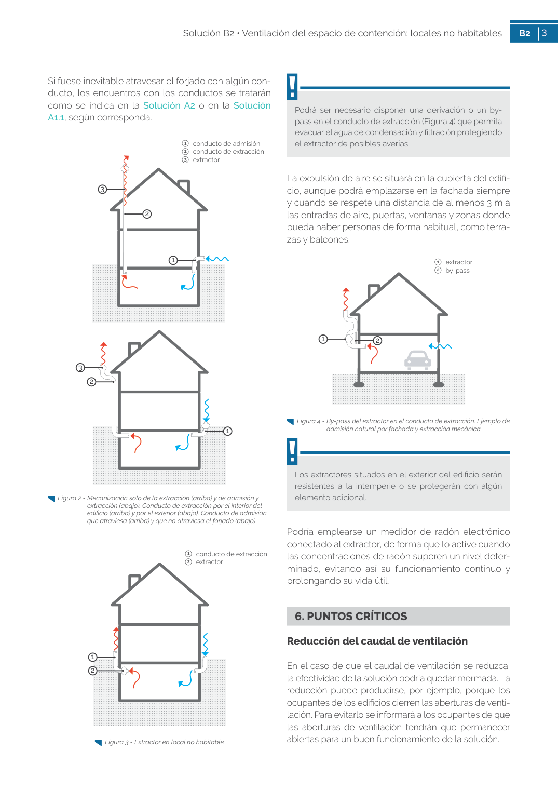

<!doctype html>
<html lang="es"><head><meta charset="utf-8">
<meta name="viewport" content="width=device-width, initial-scale=1">
<title>GUIA · Página física 3</title><link rel="stylesheet" href="../estilo.css">
</head><body>
<nav><a href="../index.html">Índice</a> › <a href="../doc/guia-pdf-1fc513e273a1-sin-fecha-fe1b00892005.html">GUIA</a></nav>

<h1>GUIA · Página física 3</h1>
<header class="meta"><p><strong>Solucion B2 Ventilacion del espacio de contencion locales no habitables</strong> · edición sin-fecha · capa guia</p>
<p>Documento <code>GUIA-PDF-1fc513e273a1</code> · SHA-256 del PDF <code>fe1b00892005f79029b9e9d5df6240a937500736190000346886ae25571234a6</code></p>
<p>Página física 3 de 5.</p>
<p><a href="../../contenido/docs/GUIA-PDF-1fc513e273a1/sin-fecha__fe1b00892005/fuente.pdf#page=3">Copia fiel del PDF fuente</a> · <a href="https://www.codigotecnico.org/pdf/GuiasyOtros/GuiaRadon/Solucion_B2_Ventilacion_del_espacio_de_contencion_locales_no_habitables.pdf">Fuente oficial</a></p>
<p><a href="https://www.codigotecnico.org/Guias/GuiaRadon.html">Ficha de la disposición en la fuente oficial</a></p>
<div class="cita"><p><a href="../../contenido/docs/GUIA-PDF-1fc513e273a1/sin-fecha__fe1b00892005/fuente.pdf#page=5">Créditos y autoría en el PDF fuente</a>. Reproducción con cita de fuente y autores.</p>
<p>Permiso literal: Se permite la reproducción total o parcial del contenido de este do­ Edición actual: septiembre 2020 cumento siempre y cuando se cite la fuente original y a sus autores.</p>
<details><summary>Leer los créditos completos y la autoría</summary><pre class="literal">                             Solución B2 • Ventilación del espacio de contención: locales no habitables   B2  55


                                                                     Este documento ha sido elaborado por el Instituto de ciencias
                                                         de la construcción Eduardo Torroja (IETcc) bajo la supervisión
                                                         de la Dirección General de Agenda Urbana y Arquitectura del
                                                                             Ministerio de Transportes, Movilidad y Agenda Urbana (MITMA).

                                                             SECRETARÍA GENERAL DE
                                                  AGENDA URBANA                                                                     Y VIVIENDA                              MINISTERIO            GOBIERNO                                                                              El IETcc, perteneciente al Consejo Superior de Investigaciones                          DE                               TRANSPORTES,                                          MOVILIDAD
            DE ESPAÑA      Y                         AGENDA                                URBANA                                                        DIRECCIÓN                                                                GENERAL                                                                      DE
                                                  AGENDA URBANA Y ARQUITECTURA                   Científicas (CSIC), es el centro de investigación en edificación
                                                         de referencia en España. La Unidad de Calidad en la Construc­
                                                                       ción del IETcc asesora al MITMA en la elaboración del Código
                              MINISTERIO            GOBIERNO                         DE                               CIENCIA                                             Técnico de la Edificación que, desde el año 2019, cuenta con la            DE ESPAÑA                                E INNOVACIÓN
                                                                   sección HS6 Protección frente a la exposición al radón.

                                                                    Dirección y Coordinación:
                                                                            Ministerio de Transportes, Movilidad y Agenda Urbana
Esta ficha forma parte de una serie de documentos englobados        Isabel Marcos Anasagasti
en una misma publicación, cuyo objetivo es constituir una he­       Raquel Lara Campos
rramienta de ayuda para el diseño de soluciones de protección       Eduardo González de Prado
frente al radón:                                                                  Instituto de ciencias de la construcción Eduardo Torroja CSIC
                                                                                      Pilar Linares Alemparte
■  Guía de rehabilitación frente al radón

Fichas de soluciones:                                                 Autoras:
                                                                   Sonia García Ortega
A: De aislamiento del edificio                                                                                      Pilar Linares Alemparte
■       Solución A1. Barrera frente al radón
■       Solución A1-1. Barrera frente al radón. Encuentros              Colaboradoras:
■       Solución A2. Sellado de fisuras, grietas, encuentros y juntas         Virginia Sánchez Ramos
■       Solución A3. Puertas estancas                                   Karina Angélica García Pardo
■       Solución A4. Creación de sobrepresión
                                                                               Edita:
B: De reducción del radón antes de que penetre en los locales       Centro de Publicaciones Secretaría General Técnica
  a proteger                                                               Ministerio de Transportes, Movilidad y Agenda Urbana©

■       Solución B1. Ventilación del espacio de contención: cá­                                                                  Entidad colaboradora:
                 mara de aire                                                                Consejo Superior de Investigaciones Científicas · CSIC
■       Solución B2. Ventilación del espacio de contención: loca­                                                                             Ministerio de Ciencia e Innovación
                      les no habitables
■       Solución B3. Despresurización del terreno                        Catálogo de publicaciones de la Administración General
                                                                         del Estado: publicacionesoficiales.boe.es
C: De reducción del radón tras penetrar en los locales a proteger
■       Solución C1. Ventilación de los locales habitables                  Centro virtual de publicaciones del Ministerio de Transpor­
                                                                                         tes, Movilidad y Agenda Urbana: www.mitma.gob.es

Fichas de ejemplos:
                                                                     Página web del Código Técnico de la Edificación:
■      Ejemplo A1+B3. Barrera frente al radón + despresurización          www.codigotecnico.org
                    con red de tubos
■      Ejemplo A2+B1. Sellado + ventilación de la cámara sanitaria      Maquetación y diseño gráfico:
■      Ejemplo A2+B3. Sellado + despresurización con red de tubos       Lapizmente. Estrategia • Diseño Gráfico
■      Ejemplo A2+C1. Sellado + ventilación mecánica de los loca-                                                                     Los contenidos o ideas recogidas en este documento pertenecen a
                          les habitables                                   sus autores. Este documento está basado en el conocimiento dispo­
                                                                                    nible en el momento de su publicación. No se aceptará por las institu­
Publicación completa:                                                    ciones ni los autores implicados responsabilidad de ningún tipo por el
ISBN: 978-84-498-1045-9                                             uso de estas recomendaciones. Las figuras tienen carácter ilustrativo
NIPO: 796-20-136-5                                                   y no deben interpretarse como detalles constructivos.
1ª edición: septiembre 2020                                                               Se permite la reproducción total o parcial del contenido de este do­
Edición actual: septiembre 2020                                    cumento siempre y cuando se cite la fuente original y a sus autores.</pre></details></div>
<div class="aviso"><strong>Alcance y límites</strong><ul><li>Extracción automática sin revisión técnica humana completa. Contraste tablas, fórmulas, notas y excepciones con el PDF. La edición disponible no determina la vigencia ni la aplicabilidad a un proyecto.</li><li>Guia o documento divulgativo; no es texto normativo.</li><li>Extracción automática; el cotejo humano está pendiente.</li><li>Semántica y tablas no equivalen a validación exhaustiva.</li></ul></div></header>
<nav><a href="guia-pdf-1fc513e273a1-sin-fecha-fe1b00892005__p0002.html">← Página 2</a> · <a href="guia-pdf-1fc513e273a1-sin-fecha-fe1b00892005__p0004.html">Página 4 →</a></nav>
<p>Formato: <a href="../../contenido/docs/GUIA-PDF-1fc513e273a1/sin-fecha__fe1b00892005/pagina/p0003.md">Texto de la página (Markdown)</a></p>
<p><a href="../../contenido/docs/GUIA-PDF-1fc513e273a1/sin-fecha__fe1b00892005/bloque/p0003.json">JSON de bloques</a></p>
<pre class="literal">3
Solución B2 • Ventilación del espacio de contención: locales no habitables
B2
3
Si fuese inevitable atravesar el forjado con algún con­
ducto, los encuentros con los conductos se tratarán 
como se indica en la Solución A2 o en la Solución 
A1.1, según corresponda.
  Figura 2 - Mecanización solo de la extracción (arriba) y de admisión y 
extracción (abajo). Conducto de extracción por el interior del 
edificio (arriba) y por el exterior (abajo). Conducto de admisión 
que atraviesa (arriba) y que no atraviesa el forjado (abajo)
1
3
2
1   conducto de admisión 
2  conducto de extracción
3  extractor
2
3
  Figura 3 - Extractor en local no habitable
1   conducto de extracción 
2  extractor
1
2
Podrá ser necesario disponer una derivación o un by-
pass en el conducto de extracción (Figura 4) que permita 
evacuar el agua de condensación y filtración protegiendo 
el extractor de posibles averías.
La expulsión de aire se situará en la cubierta del edifi­
cio, aunque podrá emplazarse en la fachada siempre 
y cuando se respete una distancia de al menos 3 m a 
las entradas de aire, puertas, ventanas y zonas donde 
pueda haber personas de forma habitual, como terra­
zas y balcones.
1   extractor
2  by-pass
  Figura 4 - By-pass del extractor en el conducto de extracción. Ejemplo de 
admisión natural por fachada y extracción mecánica.
1
Los extractores situados en el exterior del edificio serán 
resistentes a la intemperie o se protegerán con algún 
elemento adicional. 
Podría emplearse un medidor de radón electrónico 
conectado al extractor, de forma que lo active cuando 
las concentraciones de radón superen un nivel deter­
minado, evitando así su funcionamiento continuo y 
prolongando su vida útil.
6. PUNTOS CRÍTICOS
Reducción del caudal de ventilación
En el caso de que el caudal de ventilación se reduzca, 
la efectividad de la solución podría quedar mermada. La 
reducción puede producirse, por ejemplo, porque los 
ocupantes de los edificios cierren las aberturas de venti­
lación. Para evitarlo se informará a los ocupantes de que 
las aberturas de ventilación tendrán que permanecer 
abiertas para un buen funcionamiento de la solución.
2
1
</pre>
<figure><a href="../../contenido/docs/GUIA-PDF-1fc513e273a1/sin-fecha__fe1b00892005/figura/p0003.png"></a><figcaption>Página visual 3, para contrastar fórmulas, tablas y figuras.</figcaption></figure><h2>Tablas extraídas</h2><p>Datos candidatos: compruebe celdas y notas en el PDF.</p><ul><li><a href="../../contenido/docs/GUIA-PDF-1fc513e273a1/sin-fecha__fe1b00892005/tabla/p0003_t01.json">p0003_t01.json</a></li></ul>
<h2>Segmentos que incluyen esta página</h2><ul>
<li><a href="../apartado/guia-pdf-1fc513e273a1-sin-fecha-fe1b00892005__a0010.html">a0010 · 5. CÓMO SE CONSIGUE / a) Ventilación natural</a></li>
<li><a href="../apartado/guia-pdf-1fc513e273a1-sin-fecha-fe1b00892005__a0011.html">a0011 · 1   conducto de admisión 2  conducto de extracción</a></li>
<li><a href="../apartado/guia-pdf-1fc513e273a1-sin-fecha-fe1b00892005__a0012.html">a0012 · 3  extractor</a></li>
<li><a href="../apartado/guia-pdf-1fc513e273a1-sin-fecha-fe1b00892005__a0013.html">a0013 · 1   conducto de extracción 2  extractor</a></li>
<li><a href="../apartado/guia-pdf-1fc513e273a1-sin-fecha-fe1b00892005__a0014.html">a0014 · 1   extractor 2  by-pass</a></li>
<li><a href="../apartado/guia-pdf-1fc513e273a1-sin-fecha-fe1b00892005__a0015.html">a0015 · 6. PUNTOS CRÍTICOS Reducción del caudal de ventilación</a></li>
</ul>
<footer>Generado estáticamente desde el corpus normalizado; sin JavaScript ni servicios externos. El HTML es una vista reproducible; conserve la fuente y la edición al citar.</footer>
</body></html>
